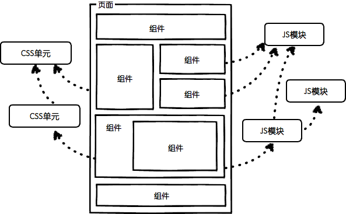

(点击上方公众号，可快速关注)
作者：木的树
网址：http://www.cnblogs.com/dojo-lzz/p/5222895.html
在当今的前端开发领域，大红大紫的组件化开发如万人空巷，前端技术圈中关于组件化讨论的文章亦如汗牛充栋。然而别人的理解终归是别人的，作为一个胸存小志的开发者，我还是希望能够根据自己的理解和实际工作，总结自己对组件和组件化开发的认知。
在我第一次接触组件化概念时，一时迷迷糊糊，如坠云雾深处。组件是什么？组件化开发是什么？为什么大牛们知道这么多而我不知道？这应该并不是我个人的疑问，每一个除此接触概念的新手，都会有此疑惑。
为什么大牛们知道这么多而我不知道？
我曾经无数次为类似的问题而烦恼，也曾感到急躁难耐。回答这个问题，我们需要有一个基本认知：任何一个新概念都是在无数前辈先贤的实践、总结中继承发展而来的。组件化开发也不例外。这个问题涉及认知学，能够引出很多值得探讨的问题，但这并不是本文的重点。关于前端组件化的发展过程，我推荐xufei大神的这篇文章：Web应用的组件化（一）——基本思路。
组件化开发是什么？
原来架构设计比较多关注的是横向的分层，即数据层，逻辑层和UI层。而组件化架构必须同时关注纵向的隔离和解耦。在分层和分模块后，每一个业务组件由三层各自存在的部署包组成，包本身是一个包含了技术组件和服务组件的一个结合体。由数据层，逻辑层，界面层三层的三个业务包可以构成一个完整的具备独立功能的业务组件。
这个解释很正确，但太概念化，我理解的组件化开发是将复杂并混乱的页面逻辑，分割成一个个独立的业务单元。
组件是什么？
根据上面的回答，我们基本可以确定，组件就是页面中一个个独立的逻辑单元。这个结论是放之四海而皆准的，然每一个高高在上的理论都要落地，根据具体情况具体回答。组件放到前端就要有一个符合前端技术的回答：前端组件就是模板、样式、代码逻辑相结合的、独立的、可复用的业务逻辑单元，其中模板由html承担、样式由css负责、代码逻辑由JavaScript编写。
由张云龙大神的这张图，可以看出组件化的基本意图以及组件的基本组成。

任何一种新的开发方式，都不能靠只读几篇文章就能明白，必须要实际动手并在工作中有所总结，才能彻底掌握。所以我并不奢望靠上文的几段文字就能让读者完全明白组件与组件化开发。
接下来我将根据自己实际的开发经验，与大家分享一下我对组件的认知的和经验总结。
组件的基本修养
任何一个华丽的思想都有一套朴实的代码实现。上面我们从抽象的层次上谈了谈组件的概念，放到实际的代码世界，该如何去实现呢？众所周知，JavaScript是一门面向对象语言，面向对象语言最重要的特性就是——抽象。放到实际开发中就是定义一个基类，应用的我们现在的场景，我们需要一个组件基类——Component。由这个基类来提供组件的基础功能。具体都应该有什么方面的基础功能呢？别急，这个问题先放一放。
组件的管理
先看一下上面的这张图，我们会发现，整个页面都是由不同的功能的业务组件组成的。这就引出了另一个问题，当一个页面的组件非常多时，我们需要一套统一管理的仓库——CRepository。每一个组件都要将自身id向仓库注册，仓库提供管理功能，如增删改查。具体的方法由实际应用而异，但几个通用的方法可以参考：
count: Number.//整个app中组件的数量
add: function(component){....} //将一个组件添加到仓库中
remove: function(id){....} //将一个组件从仓库中移除
byId: function(id){....} //根据id从仓库中查找组件
了解完仓库之后，我们便可以将主要精力放回到Component上了。
组件的生命周期
生命周期这个概念最早在软件工程中接触到，可惜我对那些枯燥的理论没有什么兴趣，上起课来云里雾里，早就还给教授了。那我就举一个大家都有体会的例子。组件如人，人的生命有尽头，组件的生命必然有。将组件的生命周期分割成不同的几个阶段来处理不同的逻辑，就如同人的一生不同阶段要面对不同的烦恼一样。
constructor:function(){} //构造函数，处理外部参数
mixinProperties:function(){} //在这个阶段，混入必要的属性
parseTemplate:function(){}//在这个阶段解析模板，将模板由字符串转化成dom节点
postCreate:function(){}//在这个阶段，模板解析完毕，可以访问component的根节点cRoot。此时可以对组件的dom树进行访问或绑定事件。但此时组件还未加到页面dom树中。
startup:function(){}//此时组件以加入dom树中，这里可以在组件加入页面dom后做一些初始化工作。对于嵌套组件，需要处理子组件的startup
destroy:function(){}//组件生命结束，进入销毁阶段，从组件仓库中注销
凡是比喻就一定有失真的地方，组件的生命当然不可能与人相比，但我却发现上面的生命周期与婴儿从被怀孕与诞生的过程极其相似。
constructor:function(){} //受精卵状态
mixinProperties:function(){} //染色体重组
parseTemplate:function(){}//婴儿在母体内的生长发育过程
postCreate:function(){}//婴儿在母体内生长发育完成，母亲即将临盆
startup:function(){}//婴儿出生，被社会认可
destroy:function(){}//个体消亡，取消社会户籍等等
组件的属性访问器
对于组件内部数据的访问，应当对外提供统一的访问渠道，通常来讲这部分内容就是属性的取值器与赋值器（get和set）。
set(prop, value)//为组件的某个属性赋值
get(prop)//为从组件中取得某个属性值
要明确的一点是，这里的set与get不仅仅像点语法一样单纯的赋值与取值，否则就是画蛇添足。使用过C#的兄台知道，C#中存在“属性的Get与Set”，它们能够避免直接对字段进行访问，这里提到组件的get与set应当具有同样的功能，具体的实现方式敬请关注后续文章。
组件的模板解析
遇到模板通常会遇到数据绑定的需求，可能是双向绑定也可能是单向绑定。双向绑定如众多的MVVM框架，模板解析过程中可能会读取组件内数据来渲染dom元素，亦或者组件dom树生成后，dom元素的变动即可作用于组件内部数据。单向绑定常出现在MVC框架中，如dojo，只是将dom元素与组件内部某个属性绑定，或者将交互事件与组件内部方法绑定。
JavaScript中没有注解特性，所以众多绑定功能都是在template中添加自定义特性，并在解析过程中处理自定义特性。
说到事件的绑定，事件带来的内存泄露问题不容忽视。这就要在组件销毁时，一并处理组件内部绑定的事件。包括在模板中绑定的事件与组件内部手动绑定的事件。
组件关系
当一个页面变得越来越复杂时，组件之间必然会出现嵌套。嵌套意味会出现父子关系、兄弟关系等。嵌套的管理可以参照DOM中的层级关系，提供相应的处理方法。但通常来讲，只需要管理好父子关系即可，兄弟关系的管理往往太复杂，而且通常情况下，一个getChildren，然后根据索引便能满足需求。所以大部分类库中组件关系的管理，往往只需要两个方法：
getParent:function(){}//获取组件的父组件
getChildren:function(){}//获取组件内部所有子组件
组件通信
组件变得复杂增多时，另组件之间如何通信的问题便被应当被提上议事日程。JavaScript本身便适用于消息驱动，处理组件间的通信当然要就地取材，事件机制便是最佳方案，所以前端组件应当在事件机制（往往是语义事件）的基础 提供通信功能。组件应当既可以接收事件也可以发送事件，于是应当分别提供方法：
on:function(component, eventName, handler) //用于绑定组件事件
emit:function(eventName, event) //组件对外发送事件
组件的销毁
组件的销毁属于组件生命周期的一部分，当组件功能变得复杂，组件正确合理的销毁就变得尤为重要。组件的销毁通常要考虑以下几个方面：
组件内部事件的解绑
组件dom的销毁
组件内部属性的销毁
子组件的销毁
组件注销
组件的解析
如果所有的组件都要通过new class的方式去手动初始化，这本无可厚非，然而在现今标签化语言盛行的时代，是否能够有一种更为方便的开发方式，将自定义组件也能够以标签化的方式来书写。答案是肯定的，主流的类库对此一般有两种做法：一种是完全的自定义标签方式，如angular2；一种是以自定义标签特性的方式，如dojo等。所有的这些都需要基础库能够提供组件解析的功能。
通常的思路是以深度优先搜索的方式，扫描整个DOM树，解析自定义标签、自定义特性，将其实例化成自定义组件。有意思的是，因为组件嵌套关系的存在，自定义组件之间就像DOM树一样也是一个倒长的树形结构。
感谢读到这里的兄台，有的兄台可能会说，这篇文章大谈特谈了一堆组件、组件化开发，但都是理论性的东西。说好听了叫方法论，说不好听了是扯淡。若不来点实际东西，那便是虚与委蛇之气溢于朱墨之表，扑人眉宇。那么接下面的几篇文章，我将与大家一起根据本文的理论，一步步实现一套基础的组件类库。
参考文章：
Web应用的组件化（一）——基本思路
Web应用的组件化（二）——管控平台
2015前端组件化框架之路
前端开发的模块化和组件化的定义，以及两者的关系？
对组件化架构的再思考
【今日微信公号推荐↓】
更多推荐请看《值得关注的技术和设计公众号》
其中推荐了包括技术、设计、极客 和 IT相亲相关的热门公众号。技术涵盖：Python、Web前端、Java、安卓、iOS、PHP、C/C++、.NET、Linux、数据库、运维、大数据、算法、IT职场等。点击《值得关注的技术和设计公众号》，发现精彩！
![]()